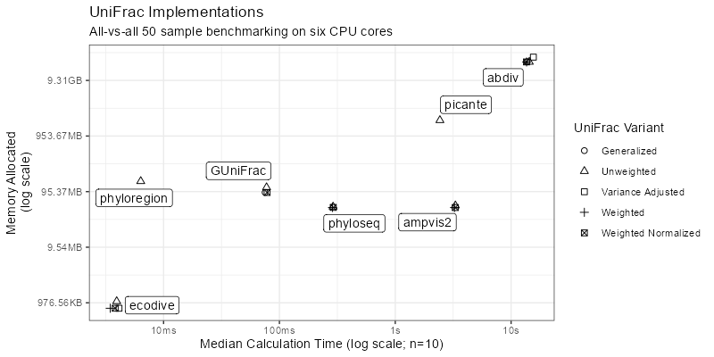
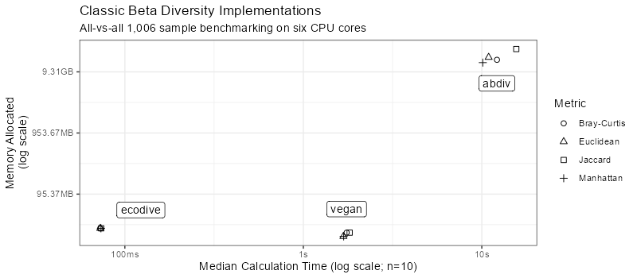
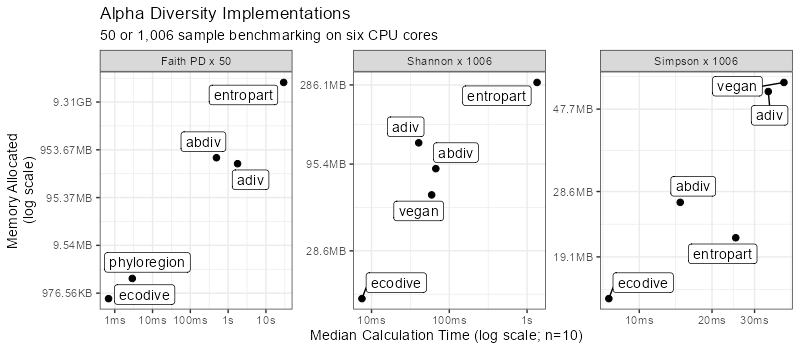

Introduction
State of the Field
The table below shows a collection of bioinformatics R packages and how they implement classic alpha/beta ecology diversity metrics (e.g. Bray-Curtis, Shannon, etc) and how they implement UniFrac metrics.
| R Package | Classic alpha/beta | UniFrac |
|---|---|---|
| abdiv | Serial R | Serial R |
| ampvis2 | vegan | Serial R |
| animalcules | vegan | GUniFrac |
| ecodive | Parallel C | Parallel C |
| GUniFrac | none | Serial C |
| phyloseq | vegan | Parallel R |
| mia | vegan | ecodive |
| microbiome | vegan | phyloseq |
| microeco | vegan | GUniFrac |
| microViz | vegan | GUniFrac |
| phylosmith | vegan | none |
| rbiom | ecodive | ecodive |
| tidytacos | vegan | phyloseq |
| vegan | Serial C | none |
Only six packages - abdiv, ampvis2, ecodive, GUniFrac, phyloseq, and vegan - have their own implementations of these algorithms. Other R packages import code from ecodive, GUniFrac, phyloseq, and/or vegan to handle alpha and beta diversity computations. Therefore, only these six packages will be benchmarked.
Methodology
We will use the ‘bench’ R package to track the runtime and memory consumption of the diversity algorithms in each of the six R packages. The host system for these benchmarking runs has the following specifications.
6-Core i5-9600K CPU @ 3.70GHz; 64.0 GB RAM
Windows 11 Pro x64 24H2 26100.4652The bench::mark() function also checks that the output
from all benchmarked expressions are equal.
Setup
We’ll use two datasets from the rbiom R package: hmp50
and gems. hmp50 has 50 samples and a
phylogenetic tree. It will be used for benchmarking the UniFrac and
Faith phylogenetic metrics. The classic diversity metrics are much
faster to calculate. Therefore, we’ll use the 1,006-sample
gems dataset for those.
The input and output formats for the six R packages are not identical, so the benchmarking code will transform data as needed. Whenever possible, these transformations will take place outside the timed block.
Click to reveal R code.
install.packages('pak')
pak::pkg_install(pkg = c(
'abdiv', 'ecodive', 'GUniFrac', 'kasperskytte/ampvis2',
'bench', 'phyloseq', 'rbiom', 'vegan' ))
library(bench)
library(ggplot2)
library(ggrepel)
library(dplyr)
version$version.string
#> [1] "R version 4.5.1 (2025-06-13 ucrt)"
sapply(FUN = packageDescription, fields = 'Version', c(
'abdiv', 'ampvis2', 'ecodive', 'GUniFrac', 'phyloseq', 'vegan' ))
#> abdiv ampvis2 ecodive GUniFrac phyloseq vegan
#> "0.2.0" "2.8.9" "1.0.0" "1.8" "1.52.0" "2.7-1"
(n_cpus <- ecodive::n_cpus())
#> [1] 6
# abdiv only accepts two samples at a time
pairwise <- function (f, data, ...) {
pairs <- utils::combn(ncol(data), 2)
structure(
mapply(
FUN = function (i, j) f(data[,i], data[,j], ...),
i = pairs[1,], j = pairs[2,] ),
class = 'dist',
Labels = colnames(data),
Size = ncol(data),
Diag = FALSE,
Upper = FALSE )
}
# Remove any extraneous attributes from dist objects,
# allowing them to be compared with `all.equal()`.
cleanup <- function (x) {
attr(x, 'maxdist') <- NULL
attr(x, 'method') <- NULL
attr(x, 'call') <- NULL
return (x)
}
# HMP50 dataset has 50 Samples
hmp50 <- rbiom::hmp50
hmp50_phy <- rbiom::convert_to_phyloseq(hmp50)
hmp50_mtx <- as.matrix(hmp50)
hmp50_tmtx <- t(hmp50_mtx)
hmp50_tree <- hmp50$tree
# GEMS dataset has 1006 Samples
gems_mtx <- as.matrix(rbiom::gems)
gems_tmtx <- t(gems_mtx)UniFrac
Here we’ll compare the time and memory taken by the unweighted, weighted, weight normalized, generalized, and variance adjusted UniFrac functions from the abdiv, ecodive, GUniFrac, phyloseq, and ampvis2 R packages. Each of the functions will be run 10 times to time them for speed, and 1 time to analyze memory usage.
Click to reveal R code.
## Unweighted UniFrac
u_unifrac_res <- rbind(
local({
# cluster for phyloseq
cl <- parallel::makeCluster(n_cpus)
doParallel::registerDoParallel(cl)
on.exit(parallel::stopCluster(cl))
bench::mark(
iterations = 10,
'abdiv' = cleanup(pairwise(abdiv::unweighted_unifrac, hmp50_mtx, hmp50_tree)),
'ecodive' = cleanup(ecodive::unweighted_unifrac(hmp50_mtx, hmp50_tree)),
'GUniFrac' = cleanup(as.dist(GUniFrac::GUniFrac(hmp50_tmtx, hmp50_tree, alpha=1, verbose=FALSE)[[1]][,,2])),
'phyloseq' = cleanup(phyloseq::UniFrac(hmp50_phy, weighted=FALSE, normalized=FALSE, parallel=TRUE)) )
}),
# ampvis2 conflicts with phyloseq cluster, so run separately
bench::mark(
iterations = 10,
'ampvis2' = {
cleanup(ampvis2:::dist.unifrac(hmp50_mtx, hmp50_tree, weighted=FALSE, normalise=FALSE, num_threads=n_cpus))
doParallel::stopImplicitCluster() } )
)
u_unifrac_res[,1:9]
#> # A tibble: 5 × 13
#> expression min median `itr/sec` mem_alloc `gc/sec` n_itr n_gc total_time
#> <bch:expr> <bch:tm> <bch:tm> <dbl> <bch:byt> <dbl> <int> <dbl> <bch:tm>
#> 1 abdiv 13.84s 14.38s 0.0676 20.1GB 1.87 10 277 2.46m
#> 2 ecodive 5.19ms 5.31ms 184. 770.5KB 0 10 0 54.23ms
#> 3 GUniFrac 77.89ms 80.4ms 11.7 92.1MB 1.17 10 1 858.32ms
#> 4 phyloseq 292.07ms 327.01ms 2.49 49.9MB 0 10 0 4.02s
#> 5 ampvis2 3.36s 3.44s 0.288 49.8MB 0.0320 9 1 31.29s
ggplot(u_unifrac_res, aes(x = median, y = mem_alloc)) +
geom_point() +
geom_label_repel(aes(label = as.character(expression))) +
labs(
title = 'Unweighted UniFrac Implementations',
subtitle = '50 sample all-vs-all benchmarking on six CPU cores',
x = 'Median Calculation Time (log scale; n=10)',
y = 'Memory Allocated\n(log scale)' ) +
theme_bw()
## Weighted UniFrac
w_unifrac_res <- rbind(
local({
# cluster for phyloseq
cl <- parallel::makeCluster(n_cpus)
doParallel::registerDoParallel(cl)
on.exit(parallel::stopCluster(cl))
bench::mark(
iterations = 10,
'abdiv' = cleanup(pairwise(abdiv::weighted_unifrac, hmp50_mtx, hmp50_tree)),
'ecodive' = cleanup(ecodive::weighted_unifrac(hmp50_mtx, hmp50_tree)),
'phyloseq' = cleanup(phyloseq::UniFrac(hmp50_phy, weighted=TRUE, normalized=FALSE, parallel=TRUE)) )
}),
# ampvis2 conflicts with phyloseq cluster, so run separately
bench::mark(
iterations = 10,
'ampvis2' = {
cleanup(ampvis2:::dist.unifrac(hmp50_mtx, hmp50_tree, weighted=TRUE, normalise=FALSE, num_threads=n_cpus))
doParallel::stopImplicitCluster() } )
)
## Weighted Normalized UniFrac
wn_unifrac_res <- rbind(
local({
# cluster for phyloseq
cl <- parallel::makeCluster(n_cpus)
doParallel::registerDoParallel(cl)
on.exit(parallel::stopCluster(cl))
bench::mark(
iterations = 10,
'abdiv' = cleanup(pairwise(abdiv::weighted_normalized_unifrac, hmp50_mtx, hmp50_tree)),
'ecodive' = cleanup(ecodive::weighted_normalized_unifrac(hmp50_mtx, hmp50_tree)),
'GUniFrac' = cleanup(as.dist(GUniFrac::GUniFrac(hmp50_tmtx, hmp50_tree, alpha=1, verbose=FALSE)[[1]][,,1])),
'phyloseq' = cleanup(phyloseq::UniFrac(hmp50_phy, weighted=TRUE, normalized=TRUE, parallel=TRUE)) )
}),
# ampvis2 conflicts with phyloseq cluster, so run separately
bench::mark(
iterations = 10,
'ampvis2' = {
cleanup(ampvis2:::dist.unifrac(hmp50_mtx, hmp50_tree, weighted=TRUE, normalise=TRUE, num_threads=n_cpus))
doParallel::stopImplicitCluster() } )
)
## Weighted Normalized UniFrac
g_unifrac_res <- rbind(
local({
# cluster for phyloseq
cl <- parallel::makeCluster(n_cpus)
doParallel::registerDoParallel(cl)
on.exit(parallel::stopCluster(cl))
bench::mark(
iterations = 10,
'abdiv' = cleanup(pairwise(abdiv::generalized_unifrac, hmp50_mtx, hmp50_tree, alpha=0.5)),
'ecodive' = cleanup(ecodive::generalized_unifrac(hmp50_mtx, hmp50_tree, alpha=0.5)),
'GUniFrac' = cleanup(as.dist(GUniFrac::GUniFrac(hmp50_tmtx, hmp50_tree, alpha=0.5, verbose=FALSE)[[1]][,,1])) )
})
)
## Variance Adjusted UniFrac
va_unifrac_res <- rbind(
local({
# cluster for phyloseq
cl <- parallel::makeCluster(n_cpus)
doParallel::registerDoParallel(cl)
on.exit(parallel::stopCluster(cl))
bench::mark(
iterations = 10,
'abdiv' = cleanup(pairwise(abdiv::variance_adjusted_unifrac, hmp50_mtx, hmp50_tree)),
'ecodive' = cleanup(ecodive::variance_adjusted_unifrac(hmp50_mtx, hmp50_tree)) )
})
)
unifrac_res <- bind_rows(
mutate(u_unifrac_res, `UniFrac Variant` = 'Unweighted'),
mutate(w_unifrac_res, `UniFrac Variant` = 'Weighted'),
mutate(wn_unifrac_res, `UniFrac Variant` = 'Weighted Normalized'),
mutate(g_unifrac_res, `UniFrac Variant` = 'Generalized'),
mutate(va_unifrac_res, `UniFrac Variant` = 'Variance Adjusted') ) %>%
mutate(Package = as.character(expression)) %>%
select(Package, `UniFrac Variant`, median, mem_alloc) %>%
arrange(Package)
unifrac_res
#> # A tibble: 19 × 4
#> Package `UniFrac Variant` median mem_alloc
#> <chr> <chr> <bch:tm> <bch:byt>
#> 1 GUniFrac Unweighted 80.4ms 92.14MB
#> 2 GUniFrac Weighted Normalized 79.01ms 92.14MB
#> 3 GUniFrac Generalized 77.28ms 92.18MB
#> 4 abdiv Unweighted 14.38s 20.05GB
#> 5 abdiv Weighted 14.55s 20.02GB
#> 6 abdiv Weighted Normalized 14.29s 20.03GB
#> 7 abdiv Generalized 14.59s 20.18GB
#> 8 abdiv Variance Adjusted 16.6s 24.46GB
#> 9 ampvis2 Unweighted 3.44s 49.76MB
#> 10 ampvis2 Weighted 3.38s 52.78MB
#> 11 ampvis2 Weighted Normalized 3.43s 49.34MB
#> 12 ecodive Unweighted 5.31ms 770.5KB
#> 13 ecodive Weighted 5.17ms 779.72KB
#> 14 ecodive Weighted Normalized 4.93ms 770.5KB
#> 15 ecodive Generalized 5.61ms 1.03MB
#> 16 ecodive Variance Adjusted 4.81ms 779.73KB
#> 17 phyloseq Unweighted 327.01ms 49.94MB
#> 18 phyloseq Weighted 306.97ms 50.29MB
#> 19 phyloseq Weighted Normalized 293.69ms 49.53MB
ggplot(unifrac_res, aes(x = median, y = mem_alloc)) +
geom_point(aes(shape = `UniFrac Variant`), size = 2) +
geom_label_repel(
data = ~subset(., `UniFrac Variant` == 'Unweighted'),
mapping = aes(label = Package),
box.padding = 0.4,
min.segment.length = Inf ) +
scale_shape(solid = FALSE) +
labs(
title = 'UniFrac Implementations',
subtitle = 'All-vs-all 50 sample benchmarking on six CPU cores',
x = 'Median Calculation Time (log scale; n=10)',
y = 'Memory Allocated\n(log scale)' ) +
theme_bw()
All of ecodive’s UniFrac functions are faster than abdiv, GUniFrac, phyloseq, and ampvis2’s implementations by 1 - 3 orders of magnitude. All of ecodive’s UniFrac functions are also more memory efficient than the other packages’ by 1 - 4 orders of magnitude.
Classic Beta Diversity
Here we’ll benchmark the Bray-Curtis, Euclidean, Jaccard, and Manhattan classic beta diversity algorithms from the abdiv, ecodive, and vegan R packages. Each of the functions will be run 10 times to time them for speed, and 1 time to analyze memory usage.
Click to reveal R code.
bray_curtis_res <- bench::mark(
iterations = 10,
'abdiv' = cleanup(pairwise(abdiv::bray_curtis, gems_mtx)),
'ecodive' = cleanup(ecodive::bray_curtis(gems_mtx)),
'vegan' = cleanup(vegan::vegdist(gems_tmtx, 'bray')) )
jaccard_res <- bench::mark(
iterations = 10,
check = FALSE, # abdiv has incorrect output
'abdiv' = cleanup(pairwise(abdiv::jaccard, gems_mtx)),
'ecodive' = cleanup(ecodive::jaccard(gems_mtx)),
'vegan' = cleanup(vegan::vegdist(gems_tmtx, 'jaccard')) )
manhattan_res <- bench::mark(
iterations = 10,
'abdiv' = cleanup(pairwise(abdiv::manhattan, gems_mtx)),
'ecodive' = cleanup(ecodive::manhattan(gems_mtx)),
'vegan' = cleanup(vegan::vegdist(gems_tmtx, 'manhattan')) )
euclidean_res <- bench::mark(
iterations = 10,
'abdiv' = cleanup(pairwise(abdiv::euclidean, gems_mtx)),
'ecodive' = cleanup(ecodive::euclidean(gems_mtx)),
'vegan' = cleanup(vegan::vegdist(gems_tmtx, 'euclidean')) )
bdiv_res <- bind_rows(
mutate(bray_curtis_res, Metric = 'Bray-Curtis'),
mutate(jaccard_res, Metric = 'Jaccard'),
mutate(manhattan_res, Metric = 'Manhattan'),
mutate(euclidean_res, Metric = 'Euclidean') ) %>%
mutate(Package = as.character(expression)) %>%
select(Package, Metric, median, mem_alloc) %>%
arrange(Package)
bdiv_res
#> # A tibble: 12 × 4
#> Package Metric median mem_alloc
#> <chr> <chr> <bch:tm> <bch:byt>
#> 1 abdiv Bray-Curtis 12.16s 14.7GB
#> 2 abdiv Jaccard 15.6s 22GB
#> 3 abdiv Manhattan 10.13s 13.2GB
#> 4 abdiv Euclidean 10.92s 16.1GB
#> 5 ecodive Bray-Curtis 72.8ms 26.3MB
#> 6 ecodive Jaccard 73.68ms 26.3MB
#> 7 ecodive Manhattan 73.47ms 26.3MB
#> 8 ecodive Euclidean 72.84ms 26.3MB
#> 9 vegan Bray-Curtis 1.75s 22.4MB
#> 10 vegan Jaccard 1.82s 22.3MB
#> 11 vegan Manhattan 1.68s 19.4MB
#> 12 vegan Euclidean 1.68s 19.4MB
ggplot(bdiv_res, aes(x = median, y = mem_alloc)) +
geom_point(aes(shape = Metric), size = 2) +
geom_label_repel(
data = ~subset(., Metric == 'Bray-Curtis'),
mapping = aes(label = Package),
box.padding = 1,
min.segment.length = Inf ) +
scale_shape(solid = FALSE) +
labs(
title = 'Classic Beta Diversity Implementations',
subtitle = 'All-vs-all 1,006 sample benchmarking on six CPU cores',
x = 'Median Calculation Time (log scale; n=10)',
y = 'Memory Allocated\n(log scale)' ) +
theme_bw()
Ecodive’s Bray-Curtis, Euclidean, Jaccard, and Manhattan implementations are faster than abdiv and vegan by 1 - 2 orders of magnitude. Ecodive’s classic beta diversity implementations are also more memory efficient than abdiv and about the same as vegan.
Furthermore, the values returned by abdiv::jaccard()
were inconsistent with those returned by the equivalent ecodive and
vegan functions.
Alpha Diversity
Last, we’ll compare the Shannon, Simpson, and Faith alpha diversity implementations from the abdiv, ecodive, and vegan R packages. Faith’s phylogenetic diversity metric will be run on 50 samples, while Shannon and Simpson metrics will be run on 1,006 samples.
Click to reveal R code.
shannon_res <- bench::mark(
iterations = 10,
'abdiv' = apply(gems_mtx, 2L, abdiv::shannon),
'ecodive' = ecodive::shannon(gems_mtx),
'vegan' = vegan::diversity(gems_tmtx, 'shannon') )
simpson_res <- bench::mark(
iterations = 10,
'abdiv' = apply(gems_mtx, 2L, abdiv::simpson),
'ecodive' = ecodive::simpson(gems_mtx),
'vegan' = vegan::diversity(gems_tmtx, 'simpson') )
faith_res <- bench::mark(
iterations = 10,
'abdiv' = apply(hmp50_mtx, 2L, abdiv::faith_pd, hmp50_tree),
'ecodive' = ecodive::faith(hmp50_mtx, hmp50_tree) )
adiv_res <- bind_rows(
mutate(shannon_res, Metric = 'Shannon x 1006'),
mutate(simpson_res, Metric = 'Simpson x 1006'),
mutate(faith_res, Metric = 'Faith PD x 50') ) %>%
mutate(Package = as.character(expression)) %>%
select(Package, Metric, median, mem_alloc) %>%
arrange(Package)
adiv_res
#> # A tibble: 8 × 4
#> Package Metric median mem_alloc
#> <chr> <chr> <bch:tm> <bch:byt>
#> 1 abdiv Shannon x 1006 65.41ms 89.5MB
#> 2 abdiv Simpson x 1006 14.4ms 26.8MB
#> 3 abdiv Faith PD x 50 503.49ms 651.4MB
#> 4 ecodive Shannon x 1006 7.13ms 14.7MB
#> 5 ecodive Simpson x 1006 7.05ms 14.7MB
#> 6 ecodive Faith PD x 50 843.25µs 749.2KB
#> 7 vegan Shannon x 1006 59.41ms 62.2MB
#> 8 vegan Simpson x 1006 37.46ms 56.3MB
ggplot(adiv_res, aes(x = median, y = mem_alloc)) +
geom_point(size = 2) +
geom_label_repel(aes(label = Package)) +
facet_wrap('Metric', nrow = 1, scales = 'free') +
labs(
title = 'Alpha Diversity Implementations',
subtitle = '50 or 1,006 sample benchmarking on six CPU cores',
x = 'Median Calculation Time (log scale; n=10)',
y = 'Memory Allocated\n(log scale)' ) +
theme_bw()
Ecodive’s Faith, Shannon, and Simpson implementations are faster than abdiv and vegan by 1 - 2 orders of magnitude. Ecodive’s alpha diversity implementations are also more memory efficient than abdiv and vegan, especially for Faith’s phylogenetic diversity.